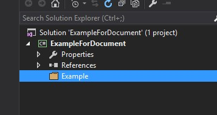

插件系统
ZKWeb的插件系统以文件夹为单位，每个文件夹等于一个插件。
插件的编译由核心框架完成，不依赖VS。
下面使用VS创建插件是因为编写插件时可以有代码提示和调试支持。
插件的目录结构
- ZKWeb.Plugins (默认的插件根目录)
- Common.Base (插件文件夹)
- Common.Admin (插件文件夹)
- ...
- ZKWeb.Example (示例的插件根目录)
- ExampleForDocument (插件文件夹)
- bin (储存这个插件编译出来的dll文件)
- src (储存代码文件，发布时可以把这个文件夹除外)
- static (储存静态文件)
- templates (储存模板文件)
- OtherExample (插件文件夹)
- 同上
- ExampleForDocument (插件文件夹)
在config.json的PluginDirectories可以指定一个或多个插件根目录。
创建插件
步骤
- 打开Visual Studio，创建项目，类型选“类库”，名称填
ExampleForDocument，不要勾选为解决方案创建文件夹。 - 在项目中引用
ZKWeb\bin下的所有dll - 在项目下添加文件夹
Example
创建后的目录结构应该如下:
ZKWeb.Example文件夹需要自己创建，或者使用github上现成项目。
- ZKWeb
- ZKWeb.Example
- ExampleForDocument
- Example
- ExampleForDocument

引用插件
步骤
- 打开
ZKWeb\App_Data\config.json - 修改
PluginDirectories，在后面添加"../../ZKWeb.Examples/ExampleForDocument" - 修改
Plugins，在后面添加"Example" - 刷新浏览器，在后台中查看"关于网站"是否显示了这个插件，点击右上角图标会显示关于网站
引用插件时需要注意依赖顺序，在前面的插件会先加载。 这里的顺序也会影响到IoC容器中的注册顺序和模板文件的查找顺序。

添加插件说明
在Example文件夹下创建plugin.json，内容如下
{
"Name": "Example",
"Description": "Example plugin for document"
}
刷新关于网站即可看到新的名称和说明。
添加代码
插件的代码都保存在src文件夹下，可以参考文档顶部的目录结构。
这里添加在插件加载时输出日志的处理:
在src文件夹中创建Plugin.cs，内容如下（引用和命名空间省略，后面的文档也如此）
/// <summary> /// 插件加载时输出一行日志 /// </summary> [ExportMany] public class Plugin : IPlugin { public Plugin() { var logManager = Application.Ioc.Resolve<LogManager>(); logManager.LogDebug("Example plugin loaded"); } }
刷新浏览器，在App_Data/Logs下可以看到输出的日志。
ExportMany和Ioc将在下一节解释。
Ioc容器
ZKWeb从0.9.5开始使用了自己编写的Ioc容器。
容器的接口说明:
IRegistrator
IResolver
IGenericRegistrator
IGenericResolver
ZKWeb全局使用的容器在Application.Ioc。
插件可以使用[ExportMany]或[Export]注册组件，也可以使用IPlugin接口在网站启动时注册到Application.Ioc中。
指定[SingletonReuse]属性时可以实现单例。
ZKWeb考虑到性能，内存占用和代码量，不使用构造函数注入。
单元测试时可以使用Application.OverrideIoc重载当前的容器。
ZKWeb在扫描类型时只会扫描公开的类型，如果类型标记了Export属性但是修饰符是private或者internal则不会被注册。
Ioc容器的使用例子
以下是简单的使用例子。
void Example() { var animals = Application.Ioc.ResolveMany<IAnimal>() // animals contains instances of Dog and Cow var animalManager = Application.Ioc.Resolve<IAnimalManager>(); // animalManager is AnimalManager var otherAnimalManager = Application.Ioc.Resolve<IAnimalManager>(); // animalManager only create once, otherAnimalManager == animalManager } public interface IAnimal { } [ExportMany] public class Dog : IAnimal { } [ExportMany] public class Cow : IAnimal { } public interface IAnimalManager { } [ExportMany, SingletonUsage] public class AnimalManager : IAnimalManager { }
组件注册顺序
插件的定义顺序会影响到组件注册顺序，例如Plugins: [ "A", "B" ]，
插件A有class ExampleHandlerA : IExampleHandler { }，
插件B有class ExampleHandlerB : IExampleHandler { }，
这时使用Application.Ioc.ResolveMany<IExampleHandler>()会获取到[ExampleHandlerA, ExampleHandlerB]。
调试插件
调试插件有两种办法，
第一种是在插件的VS中选择调试-挂载到进程并选择IIS进程挂载。
第二种是把需要调试的文件拉到打开ZKWeb的VS中，然后在里面下断点。